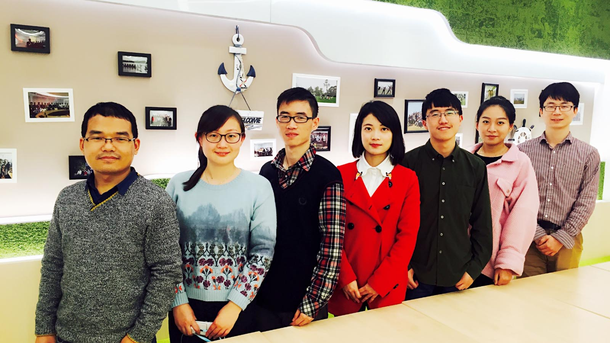
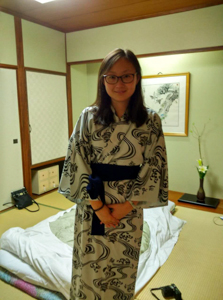
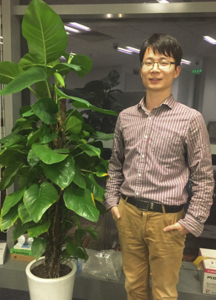
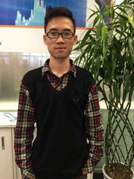

组成员介绍

项目成员合照
组成员信息详细介绍
宋道灵-ECOnnY项目的发起人。在加入Accenture之前有过三年的软件外包经历。熟悉嵌入式开发，曾独立设计并装配完成过一台2.1M的大型3D打印机。大学期间，用Scrum的方式组织并创立了FIL实验室，有着一年的团队管理经验。爱生活，爱旅行，拉着不着调的小提琴。
钱微，计算生物学博士，擅长数据科学分析，热爱机器学习和大数据技术。阳光向上，喜欢艺术、运动和旅行，追求充满乐趣的美好生活！


乔楠，理学博士，毕业于中国科学院；毕业后就职于全球最大的制药公司诺华，从事癌症基因组的研究，其间参与多种药物的研发，本人也获得了公司多项奖励；随后楠加入埃森哲作为中国区的首位数据科学经理，主要方向为大数据的数据分析，物联网的数据分析；楠有超过七年的数据分析和机器学习的经验，在顶级的科学期刊上发表过多篇论文。
方超-现在Accenture CIO项目 ， 负责ECOCnnY 的产品分析，信息计算科学专业，具有很强的逻辑思维以及分析能力，同时热爱生活善于发现点滴处的精彩。在埃森哲一年多的时间里，参与了DMS of Ferrero和SFA of Danone开发，测试，并协助项目管理，不断提升自己，现在专攻需求分析和自动化测试，不断进步。

张惠辉-软件开发相关经验丰富，特别爱好大数据环境下系统调优。工作充满激情并富有创造力
田中颖-我是Zoe , 就职于Accenture CIO部门 ， 负责ECOCnnY 的UI Design，熟悉WEB 和 APP 的User Interface Design , 喜欢设计， 追求自由，热爱生活 .

刘壮壮-ECOnnY 手机客户端的前端开发者之一。在网页布局、设计方面有一定的经验。平时设计很感兴趣，偶尔也会自己做一些界面设计。做过一年的SAP ABAP开发，后来转到了网页前端开发，加入Accenture之后也做过一段时间WEBAPI开发。最近接触到Ionic Framework，相继接触到了AngularJS。目前在做AngularJs 2.0的项目开发。喜欢玩XBOB & PlayStation，最近在学习打鼓。
李国栋--网站开发者之一,与方超,田中颖一起制作展示网站.擅长html,css,js。热爱游戏。热爱探索。喜欢在新技术社区寻找方向与灵感。
